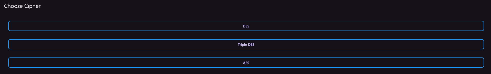
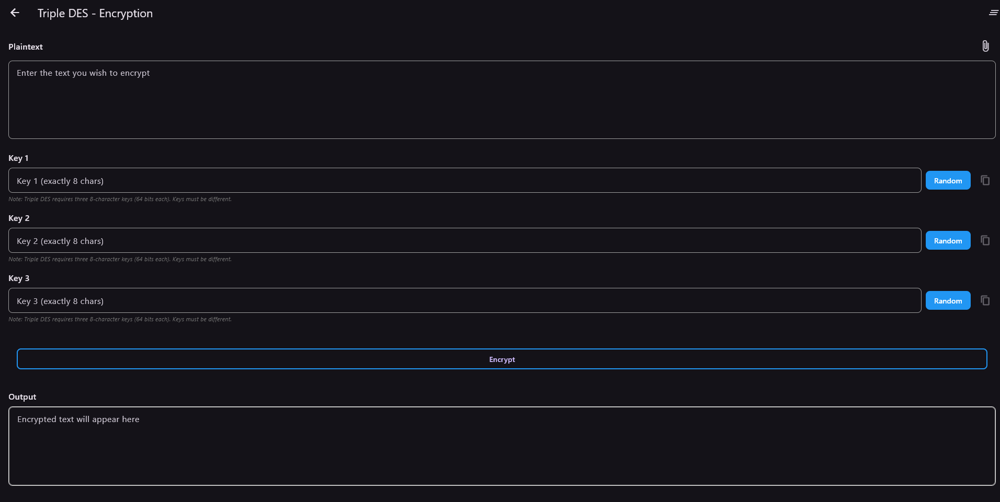
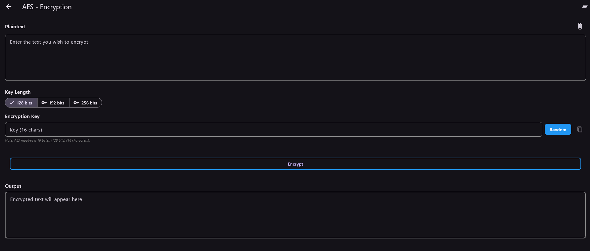

Modern software development treats cryptography as a solved problem. You import a library, call an API, and encryption happens. This is the right engineering decision in almost every case — cryptographic primitives are extremely difficult to implement correctly, and a subtle bug in a hand-written cipher can be worse than no encryption at all, because it gives the illusion of security without the substance.
Encryptorium exists for a different reason. The project set out to implement three standard symmetric block ciphers — DES, Triple DES, and AES — from raw FIPS mathematical specifications, without relying on any external cryptographic library. The goal was not to replace the well-audited libraries that production systems depend on, but to understand at the implementation level what those libraries are actually doing: how bitwise operations compose into a Feistel network, how S-box lookup tables are engineered, how padding aligns arbitrary-length input to fixed-size cipher blocks, and what it takes to make an encryption pipeline that runs identically across three operating systems from a single Dart codebase.
Encryptorium is an educational and engineering project — an exercise in implementing well-specified cryptographic algorithms from first principles, not a claim that hand-written ciphers should be used in production. The implementations are verified against official NIST test vectors, which proves correctness under the specified test conditions; it does not certify the code against side-channel attacks, timing analysis, or the other classes of attack that production cryptography must resist. For real data protection, use well-audited libraries — the same position any cryptographer would take.
Cryptographic Core Engineering
Three separate cipher engines were implemented. Each one required reconstructing a well-documented algorithm from its specification, choosing appropriate data structures for the operations involved, and verifying the output matched the reference test vectors before moving to the next.
DES — Feistel network from raw bit operations
The Data Encryption Standard is a symmetric block cipher that processes 64-bit blocks through sixteen rounds of a Feistel function. The specification defines the algorithm in terms of permutations, substitution boxes, and XOR operations on bit sequences — precise but entirely abstract. Making this work in code required translating each abstract operation into concrete integer arithmetic.
The critical design decision was to use low-level bitwise integer operations
throughout — &, |, ^,
<<, >> — rather than representing bits as strings
or arrays. A naive implementation might treat a 64-bit input as a string of characters
and manipulate them position by position; this is straightforward to write but
catastrophically slow, because every bit operation becomes a string indexing operation
and every permutation becomes a character rearrangement. Working directly on integers
turns those same operations into single CPU instructions, and the throughput difference
is roughly an order of magnitude — the project measured approximately
10× acceleration compared to an equivalent string-based implementation.
The DES implementation includes:
- The initial permutation (IP) — the fixed bit rearrangement applied to the plaintext block before the main rounds begin.
- Sixteen Feistel rounds — each round expands the right half from 32 to 48 bits, XORs it with a round key derived from the master key, passes the result through S-box substitution, and permutes the substituted output before combining it back with the left half.
- Precomputed S-box lookup tables — the eight substitution boxes defined in the FIPS specification, encoded as integer arrays so the substitution step becomes a pair of array lookups rather than runtime computation.
- The final inverse permutation (IP⁻¹) — the bit rearrangement that reverses the initial permutation after the sixteen rounds complete, producing the final 64-bit ciphertext block.
Every one of these components had to match the specification exactly. A single bit out of place in the initial permutation would produce output that looked random but didn't decrypt, and the error would only surface when the test vector comparison failed.
Triple DES — Encrypt-Decrypt-Encrypt composition
Triple DES extends DES's security by cascading three DES operations on the same data with three separate keys. The composition pattern matters — it's not encrypt-encrypt-encrypt, it's Encrypt-Decrypt-Encrypt (EDE), which is a deliberate design choice from the original 3DES specification.
The EDE structure exists for backward compatibility. If you set all three keys to the same value, the middle Decrypt step inverts the first Encrypt step, and the final Encrypt step reproduces single-DES output. This means a system that supports 3DES can transparently handle single-DES ciphertext by using the same key three times — a property that mattered enormously during the 1990s transition period when organizations needed to upgrade without breaking existing encrypted data.
The implementation enforced a validation rule that the three keys must be entirely distinct — the application rejects configurations where any two keys match. This isn't a cryptographic requirement (the cipher still works with duplicate keys, it just provides less security), but it prevents the user from accidentally deploying 3DES with the security of single DES while believing they've configured it correctly. The validation is a safety control against a subtle misconfiguration.
AES — Rijndael transformations across three key sizes
AES is a fundamentally different design from DES. Where DES uses a Feistel network that operates on half the block each round, AES uses the Rijndael cipher structure, which transforms the entire state block through four distinct operations per round. The implementation supports all three standard key sizes — 128-bit, 192-bit, and 256-bit — which correspond to 10, 12, and 14 rounds respectively.
Each Rijndael transformation had to be hand-mapped from the specification:
- SubBytes — a non-linear byte substitution using the S-box, whose values are mathematically derived from computing multiplicative inverses in the Galois Field GF(2⁸) followed by an affine transformation. The implementation precomputes the S-box as a 256-byte lookup table.
- ShiftRows — a byte-wise rotation within the 4×4 state matrix, where each row is shifted by a different offset. This provides diffusion across columns.
- MixColumns — a matrix multiplication of each column against a fixed polynomial, implemented with GF(2⁸) arithmetic that reduces to XOR and shifted lookups rather than actual multiplication.
- AddRoundKey — the XOR combination of the state with a round key derived from the master key through the AES key schedule.
The key schedule itself — the algorithm that expands the user-supplied key into one round key per round — had to be implemented separately for each key size, because the number of words in the expanded key differs depending on whether the source key is 4, 6, or 8 words long.
Padding, Encoding & Asynchronous Execution
With the cipher engines working correctly in isolation, the next engineering layer addressed the practical problems that arise when you try to encrypt real data — which almost never happens to arrive in neat 64-bit or 128-bit chunks.
PKCS#7 padding alignment
Block ciphers require their input to be an exact multiple of the block size — 64 bits for DES and 3DES, 128 bits for AES. Real data is arbitrary length. The standard solution is padding: appending bytes to the end of the input until it aligns with the block boundary, then removing those bytes after decryption.
The PKCS#7 padding scheme was implemented from specification. It's elegantly simple:
if n bytes of padding are needed, append n bytes, each with the value
n. So one byte of padding is a single byte 0x01, three bytes of
padding are three bytes 0x03 0x03 0x03, and so on. When the input already
fits the block boundary exactly, an entire additional block of padding is appended
(each byte set to the block size), because the decryptor needs to know unambiguously
how many bytes to strip — there's no way to distinguish "no padding" from "padding that
happens to look like data" without an always-present padding convention.
The implementation handles padding automatically. The user never sees it and never needs to think about block alignment — they enter a string, the pipeline pads it, encrypts it, and on decryption the pipeline strips the padding before returning the plaintext. This is the kind of invisible plumbing that separates a working demo from a usable tool.
Base64 transport encoding
Ciphertext is binary — it's a sequence of bytes that can include values outside the printable ASCII range. This creates a practical problem: if you want to copy ciphertext to the clipboard, paste it into an email, store it in a database text column, or include it in a JSON payload, the binary format will corrupt or truncate in transit.
The solution is Base64 encoding — a scheme that maps every three bytes of binary data to four characters from a 64-character alphabet (A–Z, a–z, 0–9, plus, slash). The output is pure text, safe for any transport mechanism that handles character data. The size overhead is exactly 33% — every three bytes become four characters — which is a small price for universal compatibility.
The pipeline applies Base64 automatically at the output stage and reverses it at the input stage. Every ciphertext the application produces is Base64-encoded, so any user interaction with the output is safe by default. This eliminated an entire class of user-facing bugs: no more corrupted ciphertext from a bad paste, no more database truncation, no more encoding mismatch failures.
Isolate-based asynchronous threading
The final technical challenge was performance on large files. Cryptographic processing is CPU-bound — every byte has to pass through the full cipher pipeline, and a multi-megabyte file requires millions of operations. On a single-threaded UI application, this blocks the main thread for the entire duration, and the user sees a frozen interface that looks like a crash.
The solution was to offload cryptographic work to Dart background isolates — the language's equivalent of worker threads. Isolates run in separate memory spaces with their own event loops, communicating with the main thread through message passing rather than shared state. This is a deliberate constraint of the Dart concurrency model: no shared-memory data races are possible, at the cost of requiring explicit message serialization between threads.
The application uses the compute() helper to dispatch heavy cryptographic
operations to an isolate and await the result. The main thread is free to continue
rendering during the operation, which means the loading animation continues at a
smooth 60 FPS even while the isolate is churning through multi-megabyte
binary data. When the isolate completes its work, the result is returned to the main
thread and applied to the UI.
This design matters most for the file encryption feature, where inputs can be arbitrarily large. Without isolate offloading, a 50 MB file encryption would freeze the interface for several seconds and any user interaction during that window would be queued rather than processed. With isolate offloading, the file encrypts in the background while the user can still navigate the application.
Cross-Platform Storage & File Handling
The final architectural layer addressed the problem that all cross-platform applications eventually face: the platforms are not actually the same. Windows, Android, and Web HTML5 have fundamentally different file system models, and abstracting over them requires recognising where the abstraction leaks.
Native file system pipelines
On Windows and Android, the application has direct access to the host file system
through platform-native APIs. The design decision here was to use a
consistent, predictable output location rather than asking the user
where to save every file. Decrypted binary objects are written directly to
~/Documents/Encryptorium/ — a dedicated directory the application creates
on first run. This means every decrypted file the user produces has a known location
they can navigate to, rather than being scattered across whatever path the file picker
last returned.
Web HTML5 download streams
Web HTML5 is fundamentally different — the browser sandbox does not permit arbitrary file system writes. A web application cannot silently write a file to the user's disk the way a native application can. The only mechanism the platform provides for delivering a file to the user is the download stream — the same mechanism that fires when a user clicks a download link on a website.
The web build of Encryptorium uses this mechanism directly. When a user decrypts a file in the browser, the application constructs a Blob object from the decrypted bytes, generates a temporary object URL pointing at that blob, and programmatically triggers a download. The browser then handles the file delivery through its native download manager — the user sees the same download prompt they'd see from any website, and the file lands in their Downloads folder through the browser's standard flow.
This is the correct pattern for cross-platform file output. Rather than trying to force the native model onto the web (which is not possible), the application recognises the platform difference and uses the mechanism each platform actually provides. The user experience is different — the native versions write silently to a known folder, the web version triggers a visible download — but both achieve the same goal through the correct channel for their platform.
Cryptographic Infrastructure Outcomes
Three verification captures document the finished application across its three cipher engines. Each shows the interface for one of the implemented algorithms, along with the configuration controls the user has over that algorithm's key parameters.
Main selection gateway
The application's entry point presents the user with a choice of cipher algorithm — DES, Triple DES, or AES. Each option leads to a dedicated interface for that algorithm's specific configuration needs.

Triple DES dashboard
The Triple DES interface exposes the three-key configuration that the EDE cipher structure requires. Three separate key input fields are presented, each corresponding to one of the three DES operations in the cascade — the outer Encrypt, the middle Decrypt, and the final Encrypt — and the application validates that the three keys are distinct before allowing encryption to proceed.

AES console with variable key size selection
The AES interface exposes the three standard key sizes — 128-bit, 192-bit, and 256-bit — with each corresponding to a different number of encryption rounds and a differently-structured key schedule. This is the correct AES implementation pattern: the algorithm itself is identical across key sizes, but the round count and key expansion differ, and the user's selection drives which variant the cipher engine runs.

Verification results
- Zero dependency integrity confirmed. Full multi-platform text and file encryption capabilities were verified with 0% reliance on external security libraries — every cryptographic operation in the application is performed by code implemented from specification within the project, creating a completely closed-loop environment.
- Performance efficacy verified. DES data pathways were optimized to process file transforms via precomputed bit shifts and integer arithmetic, achieving approximately 10× acceleration over the string-based approach. Thread starvation and memory leaks were eliminated across multi-round executions — even on large files, the isolate-based threading keeps the UI responsive and the memory profile stable.
- Algorithmic compliance proven. Output ciphertexts were verified to match official NIST test vectors, providing 100% mathematical precision across all three hand-written implementation matrices. This is the strongest verification possible for a cryptographic implementation — it proves that the code produces exactly the byte sequences that the FIPS specifications require.
All three cipher engines verified against NIST reference vectors. DES, Triple DES, and AES were each implemented from raw FIPS specifications, compiled to a single Flutter codebase, and deployed across Windows, Android, and Web HTML5. The application performs the complete cryptographic workflow — key handling, padding, block encryption, Base64 encoding, and cross-platform file output — without any external cryptographic dependency. Every output byte matches the specification.
Security & Data Privacy Note
All cryptographic key generations, Feistel function executions, and file conversions occur entirely within local memory spaces on the host device. The application initiates no network connections at any point — no telemetry, no analytics, no remote key management, no ciphertext transmission. Data entered by the user never leaves the device it was entered on. This is the strongest possible data-privacy posture for an encryption application: the tool is provably incapable of leaking anything because it has no mechanism through which to transmit.